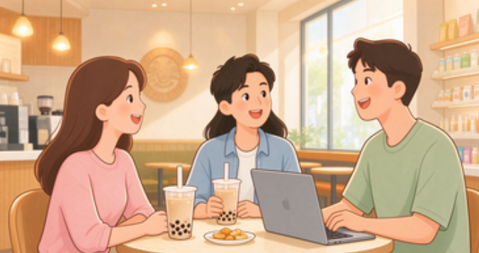
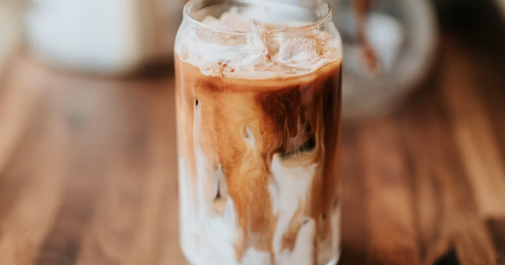
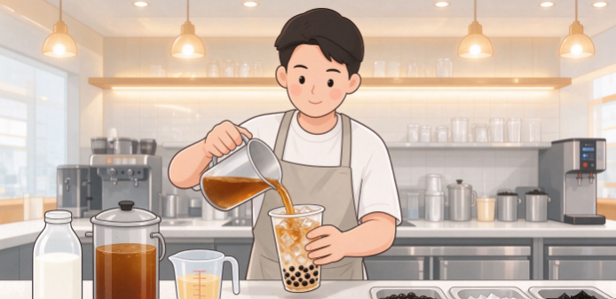

Share a cup of joy
COrdering bubble tea and trying new flavors with friends has become a small pleasure in many people’s leisure time.
COrdering bubble tea and trying new flavors with friends has become a small pleasure in many people’s leisure time.

Bubble tea shops often serve as spots for friends to chat, study, or take a short break.

Brands launch seasonal limited editions and new flavors, giving customers chances to try different combinations.

Sweetness, ice level, tea base and toppings can all be adjusted to create your own drink combination.
The sweetness and toppings of bubble tea affect calorie intake. When enjoying your drink, you may choose less sugar or a smaller cup according to your needs. Treat bubble tea as an occasional treat and keep a varied, balanced diet.